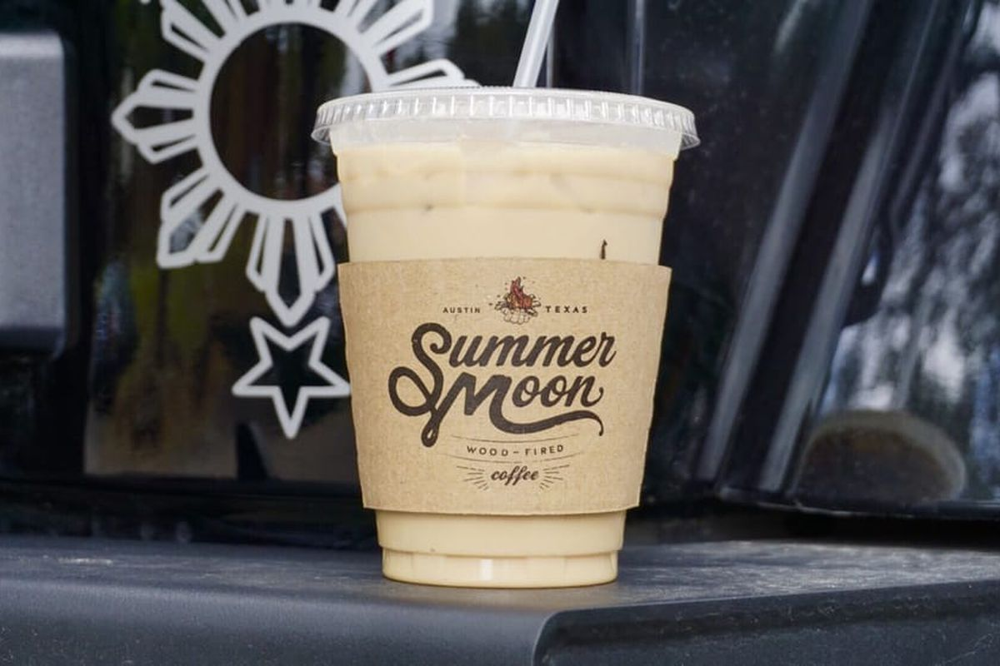

Exploring Austin
Drinks
Summer Moon Coffee

Summer Moon is known for its special brewed coffee. On the 27th of June, 2002, Summer Moon Coffee started its business in Austin, Texas. They began, simply as a coffee bar, but quickly turned their attention to coffee roasting. In 2004, inspired by the early American coffee roasters and the simplicity of their tools: brick, fire and wood, they set out to craft custom coffee roasts that they are truly proud to call their own.